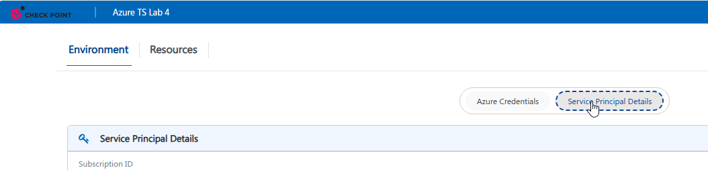

Post Deployment Actions
Step 1
Make sure the MGMT server has finished FTW.
- Connect with SSH to the MGMT server
- If you are in expert mode, the machine is done with FTW. If not, wait until the VM finishes FTW and automatically reboots again.
- Check that the MGMT is completely up by running
api status | Do not proceed forward before this is ready!
Step 2
Run the Auto-MGMT script.
- Connect with SSH to the MGMT server
- Run the following command on the MGMT server:
/var/log/automgmt.sh
- Once the script is done, connect to SmartConsole
Step 3
Conect the Azure Cloud account to CME
- In SmartConsole navigate to Settings > CloudGuard Network
- Click on Advanced in the top right corner and change the Management name to Lab-mgmt
- Add an Azure account and fill in the detaails of the account service principal located in the Lab environment page

Step 4
Create a template for the VMSS environment
- In the Azure section where you connected the account, clikc on the new button of Add template
- Name the template Lab-tn choose the correct version and add the SIC password Checkpoint123
- Note: R82.10 might be missing from dropdown option, choose another option for now, after the gateways will be scanned by the CME, the version R82.10 will appear
- Connect with SSH to the management server and run
tail -f /var/log/CPcme/cme.log
- Once you see the CME logs showing the gateways, the lab is ready